Since 11-02 evening this page shows the spherical-polar full-sphere PRODUCTION run (launched 11-02 18:44, stream phase from t 0.01). The cubed-sphere N = 128 test (shown here earlier on 11-02) and RUN12 (10-24 – 10-30) are kept at the bottom.
RY Per accretor in 3-D: full-sphere production
AthenaK radiation hydrodynamics of the 16 M⊙ mass gainer of RY Per on the full sphere (spherical polar, 500 × 116 × 512, stretched θ with
a fine ±20° core), with the 3-D Roche potential, the WB tangential tide, Coriolis and centrifugal forces, in the frame co-rotating with the binary
(donor towards +x, longitude 0). Static phase to t 0.01, then the 1e-4 M⊙/yr L1 stream; the polar ring averaging uses the new
polar_ring_avg_gz fix that removed the grid-scale vφ noise in the polar rows.
rad_m1/polar_ring_avg = true, polar_ring_avg_ke = rad, polar_ring_avg_gz = true (new: the coarse-group tangential radiation force deposited smoothly across the phi faces), vet_gd = true (twin off), problem/roche_wb_tan = true (WB tide), floor_m1_vcap = true, time2_floor_eint = 1e-7ringsmooth_1102/decks/sp_static_gz.athinput t 0 – 0.01 (run ringsmooth_1102/long/L_gz, same binary); stream sp_stream_gz.athinput from its rst 00002, tlim 1e9; outputs hydro_w every 0.005, m1 every 0.01, rst every 0.05page built 2026-11-03 23:28 PST on Caltech by accsp_prod_page/refresh.sh from the hst, logs and dumps present then (read only); unread input keys: rad_m1/time2_pred_cap = 0.5
History
dt 3.26e-06 now, smallest in the stream phase 2.32e-06 (cs N=128 test: 1.04e-06); Lmeas 4.782e+04 L⊙; no NaN/FATAL so far.
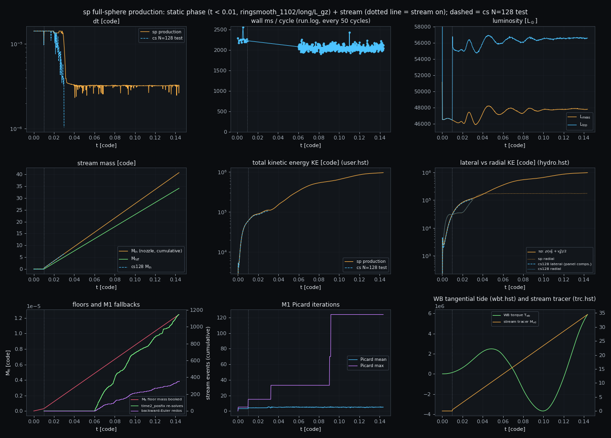
Lateral KE by latitude: sp vs the cs N = 128 test
At t 0.0300 the sp lateral KE is 1.05× the cs N=128 test (|lat| > 60°: 1.60×) – the polar bands still carry more lateral KE than on the cubed sphere. Latest (t 0.1400): 9.71e+05 code; the cs128 test stopped at t 0.030.
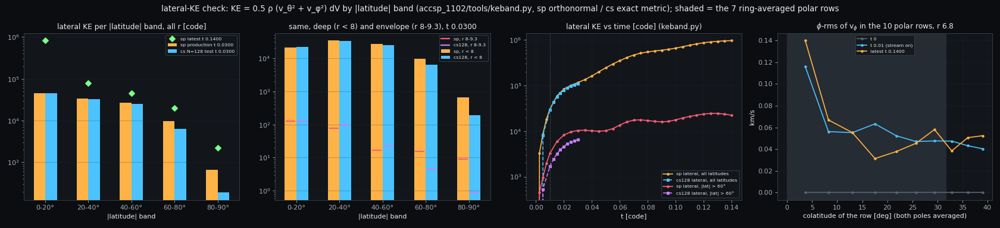
Slices
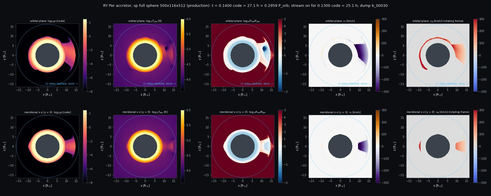
Photosphere and the L1 tip
Median Rphot 9.055 R⊙ (2nd percentile 8.825); at the L1 tip vr is -358.5 to -196.6 km/s and ρ up to 1.9e+06× the t = 0 value.
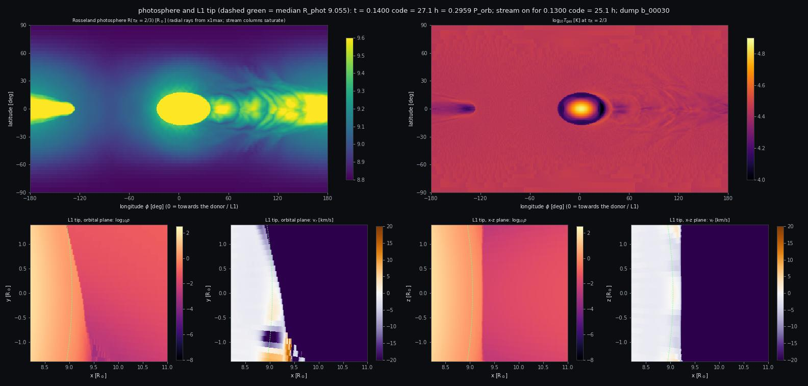
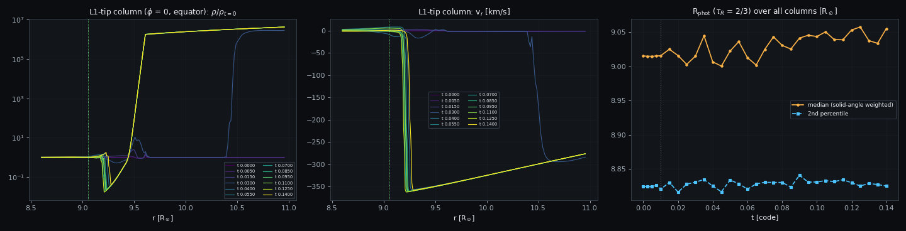
Stream tracer
Of the stream gas injected so far (40.6 code), 85 % is still in the domain, 15 % went into the sinks, 0 % through r_in and 0 % out through r_out/walls; the budget closes to 1e-14 of the injected mass.
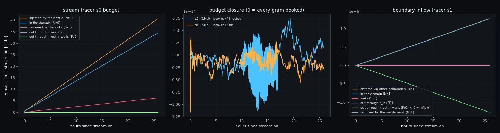
At t = 0.1400 the photosphere is stream gas (s0 > 0.1) over 33 % of its area; the maps show where the accreted gas spreads in the orbital and x-z planes.
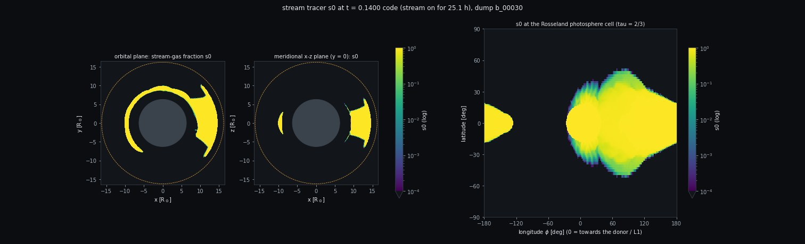
Half of the stream gas in the domain is inside r = 9.04 R_sun (10 % inside 8.81; median R_phot 9.06), 52 % lies below the photosphere, and the stream fraction exceeds 1e-3 of the shell mass down to r = 8.61 R_sun.
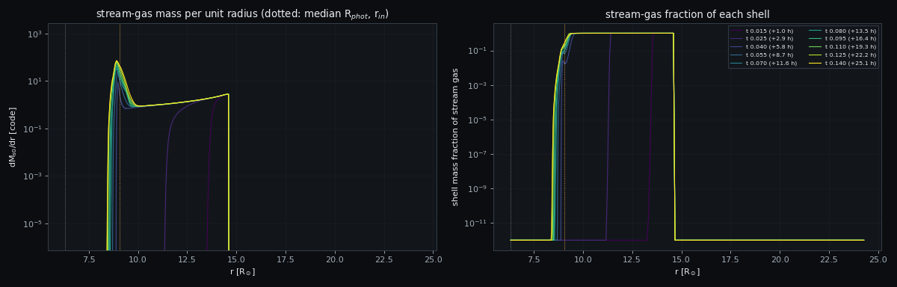
Movies
Earlier runs
cs N = 128 test (test128wb, 11-01 – 11-02)
Cubed sphere, 6 × 128 × 128 columns × 500 radial cells, same physics and keys except the sp pole handling; static to t 0.01, stream to t 0.03 (5.8 h, 0.063 orbits), 2.4 s per cycle on 4 H200. It is the reference for the lateral-KE check above. Figures and movies are its final ones.
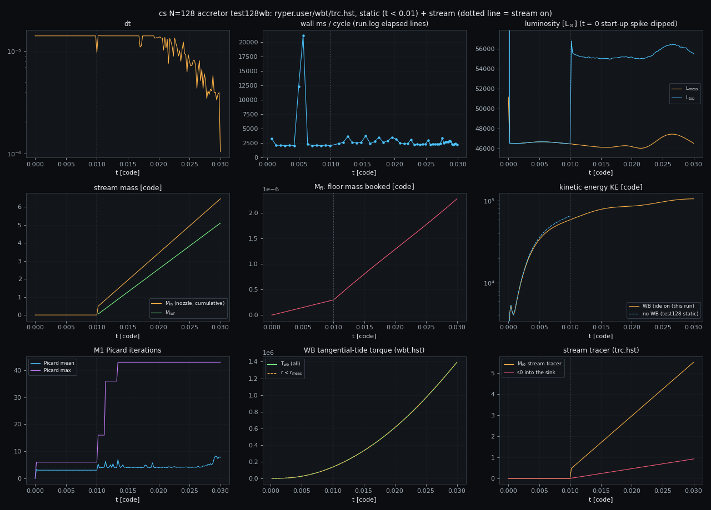
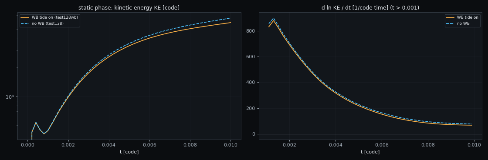
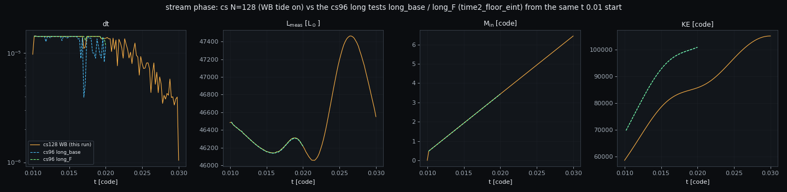
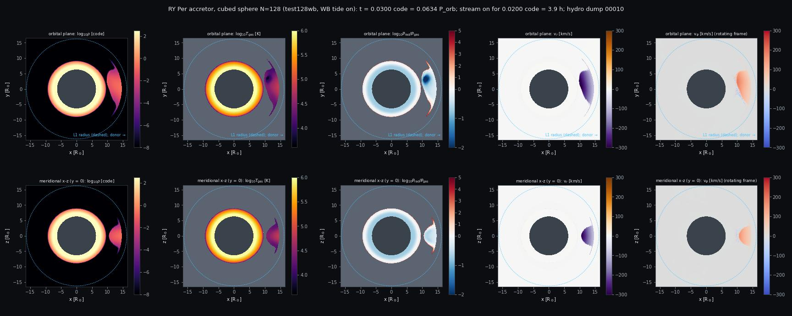
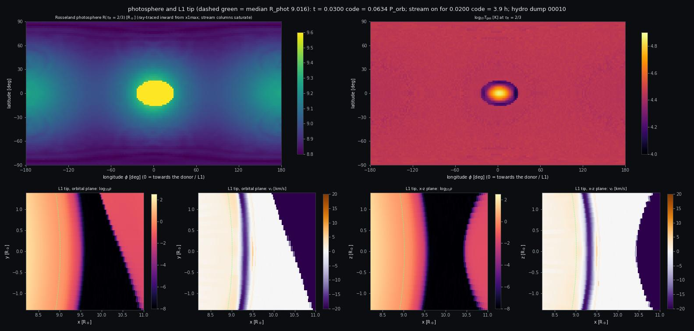
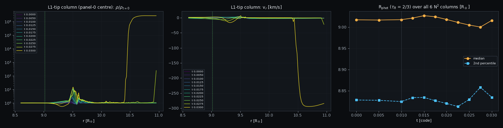
RUN12 (spherical-polar ±20° wedge, 10-24 – 10-30)
±20.4° wedge about the orbital plane (420 × 58 × 512, closed θ walls), static to t 0.05 then the stream; last shown at t = 2.0244 code = 16.3 d = 4.28 orbits (405 hydro dumps).
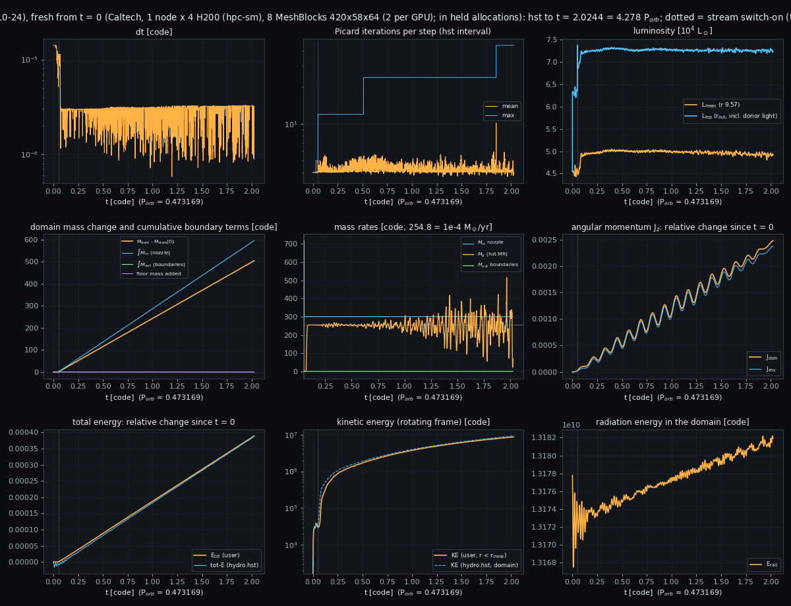
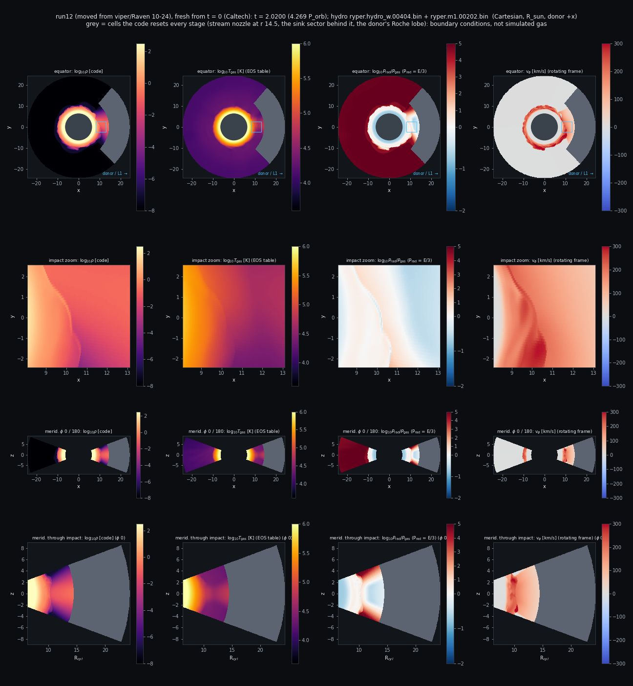
Caveats
- Prad = E/3 is the isotropic value; in the optically thin atmosphere the VET Prr differs.
- The photosphere is a radial ray trace per column (no oblique rays); the stream columns near longitude 0 reach τ = 2/3 at the nozzle.
- The floor-class cells (ρ < 1e-7 code) are mostly the ambient around the star, not failures; Mfl is the floor mass the code books.
- The cs N = 128 comparison ends at t 0.03; later sp times are compared with that end state only.